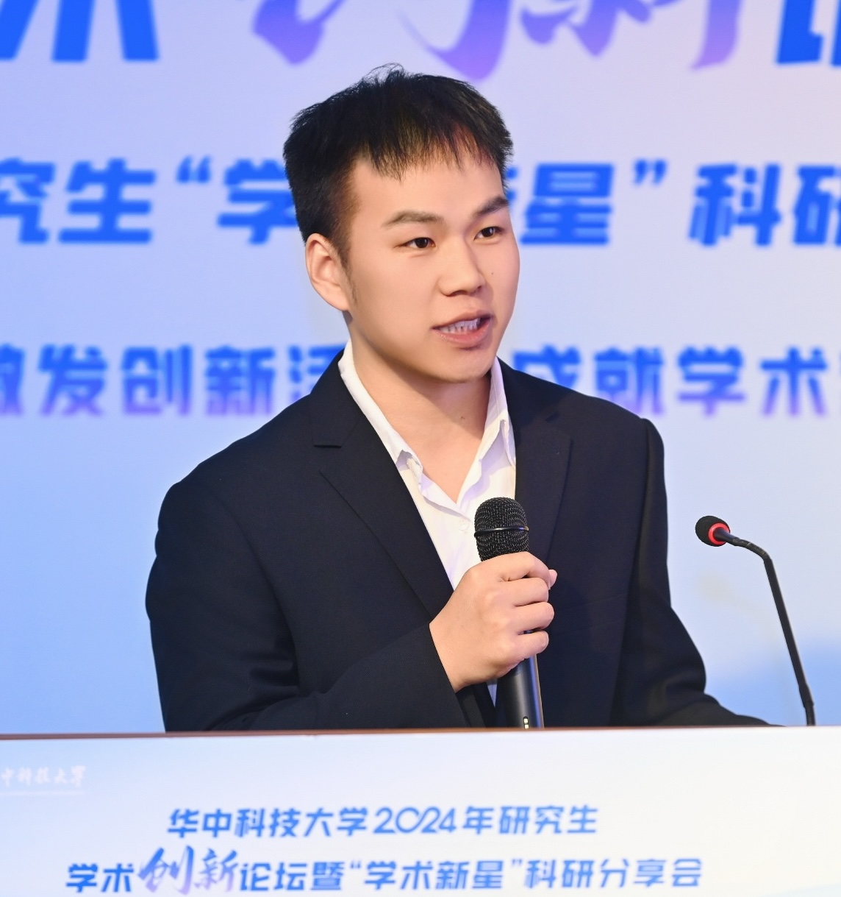
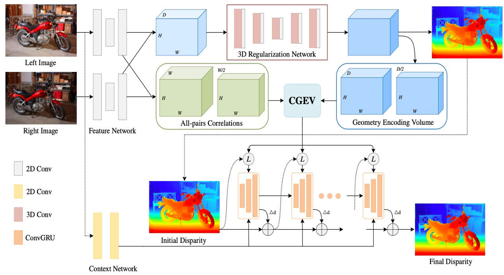
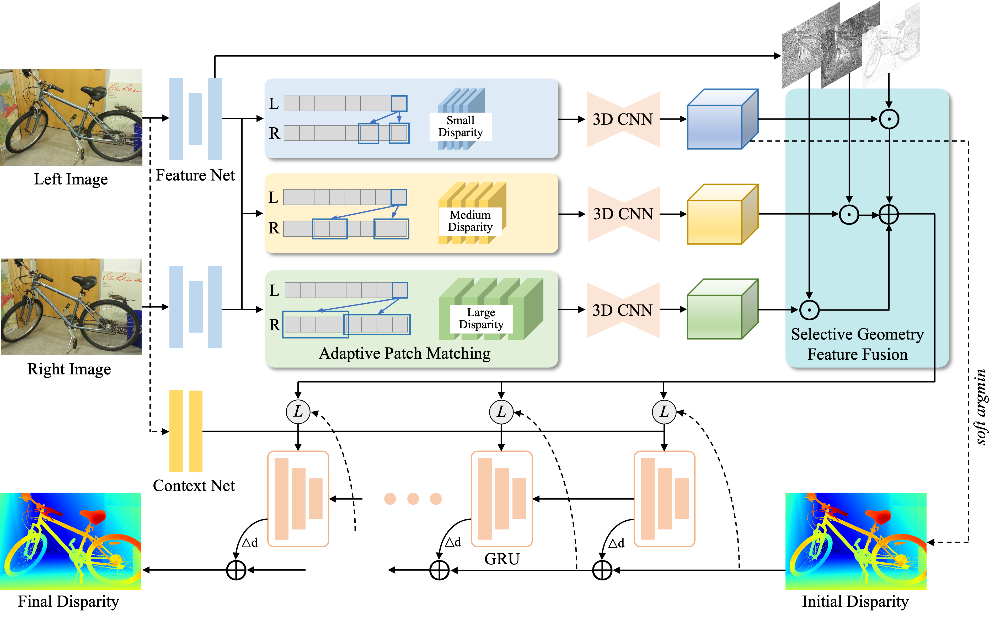
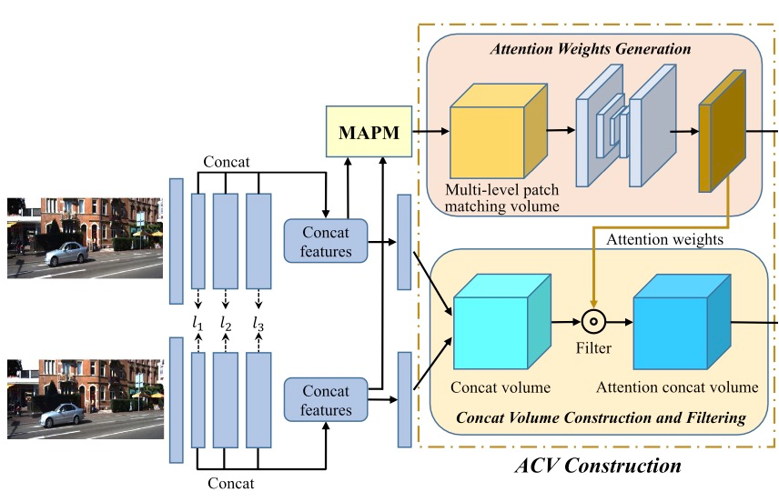

I am a final-year Ph.D. student at Huazhong University of Science and Technology, advised by Prof. Xin Yang (expected to graduate in June 2027). As first author (including co-first author), I have published 11 papers in top-tier journals and conferences such as T-PAMI, NeurIPS, CVPR, and ICCV. My most-cited first-author paper alone has received over 500 citations on Google Scholar. I was awarded funding from the National Natural Science Foundation of China PhD Student Research Program and was honored with the title of “Academic Star” at HUST.
Currently, I am a research intern at Robbyant, Ant Group, mentored by Yinghao Xu and Qihang Zhang, focusing on video world models and robot learning.
I am actively looking for full-time positions. I’m always open to collaborations. Feel free to reach out!
Email: gwxu [at] hust.edu.cn
| [2026-06] | Our WAM paper Next Forcing is now available as an arXiv preprint. |
|---|---|
| [2025-09] | Pixel-Perfect Depth accepted by NeurIPS 2025. |
| [2025-05] | IGEV++ accepted by TPAMI 2025. |
| [2025-03] | MonSter accepted by CVPR 2025. |
| [2024-10] | Honored as “Academic Star” (学术新星) at HUST. |
| [2024-05] | Granted the National Natural Science Foundation of China (NSFC) PhD Student Research Program. |



| [01/2026 - now] | Research Intern, Robbyant, Ant Group — video world models / embodied AI |
|---|---|
| [02/2025 - 12/2025] | Research Intern, Xiaomi EV — depth foundation models |
| [05/2023 - 12/2023] | Research Intern, Shanghai AI Laboratory — computational photography |
Conference Reviewer: CVPR 2023, ICCV 2023, SIGGRAPH Asia 2023, CVPR 2024, ECCV 2024, ICRA 2024, ICLR 2025, AAAI 2025, CVPR 2025, ICCV 2025, NeurIPS 2025, AAAI 2026, ICLR 2026, CVPR 2026.
Journal Reviewer: TPAMI, IJCV, TIP, RA-L.